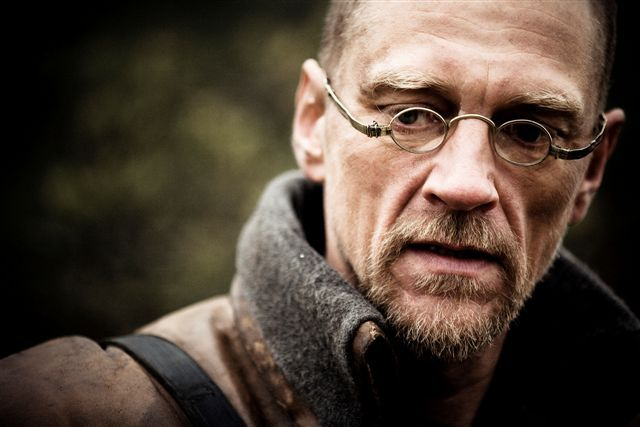

#7952 Winterkrieg


 IMDB-Wertung: 7.8 / 10
IMDB-Wertung: 7.8 / 10  Metascore: 0
Metascore: 0 
November 1939. Stalin befiehlt den Angriff auf Finnland, an der Grenze marschieren 500.000 sowjetische Soldaten auf. Für das kleine Finnland beginnt der Kampf gegen einen übermächtigen Feind. Die Brüder Martti und Paavo aus Österbotten schließen sich dem Infanterieregiment JR23 an, welches nach Karelien abkommandiert wird. Bei minus 40 Grad erleben sie die Hölle des Winterkriegs in der verlustreichen Schlacht von Taipale. Den russischen Panzern und Flugzeugen können die Finnen nur ihre einfachen Waffen und selbstgebastelten Molotow-Cocktails entgegen halten. Viele von Marttis Kameraden finden einen eisigen Tod, die verbleibenden Männer werden an die Mannerheim-Linie verlegt. Diese gilt es um jeden Preis zu halten, denn wenn die Mannerheim-Linie fällt, fällt ganz Finnland…
Jahr: 1989
Dauer: 197 Minuten
FSK: 16
Land: Finnland Studio: Edel Media & EntertainmentTonspuren:
Untertitel: Deutsch,
Auflösung: 1080p (1808x1080) Größe: 16793 MB
Genre: Drama, Krieg, Geschichte
Regisseur: Pekka Parikka
Drehbuch: Pekka Parikka
Soundtrack: Juha Tikka
Darsteller:
- Timo Torikka als Private Pentti Saari
- Tomi Salmela als Private Matti Ylinen
- Samuli Edelmann als Private Mauri Haapasalo
-  Ville Virtanen als 2nd Lieutenant Jaakko Rajala
- Leea Klemola als Aino
- Taneli Mäkelä als Private Martti Hakala
- Vesa Vierikko als 2nd Lieutenant Jussi Kantola
- Heikki Paavilainen als Private Vilho Erkkilä
- Antti Raivio als Corporal Erkki Somppi
- Esko Kovero als Medical Corporal Juho Pernaa
- Martti Suosalo als Private Arvi Huhtala
- Markku Huhtamo als Private Aatos Laitila
- Matti Onnismaa als Corporal Veikko Korpela
- Konsta Mäkelä als Private Paavo Hakala
- Vesa Mäkelä als Lieutenant Yrjö Haavisto
- Aarno Sulkanen als Captain Sihvo - battalion commander
- Kari Kihlström als Lieutenant Jorma Potila
- Esko Salminen als Lieutenant Colonel Matti Laurila
- Kari Sorvali als Sergeant Major Hannu Jutila
- Ari-Kyösti Seppo als Private Ahti Saari
- Esko Nikkari als Private Yrjö 'Ylli' Alanen
- Eero Melasniemi als Private Eino Nisula
- Pertti Sveholm als Private Antti Jouppi
- Helena Haavisto als Mrs. Ylinen
- Kalevi Kahra als Mr. Ylinen
- Tarja Heinula als Anna Ylinen
- Pirkko Hämäläinen als Marjatta Hakala
- Leena Suomu als Liisa Hakala
- Teemu Koskinen als Jussi Hakala
- Eero Mäenpää als Little-Paavo Hakala
- Miitta Sorvali als Karelian Woman
- Esa Suvilehto als Karelian Man
- Tiina Björkman als Leena
- Hannele Mäki-Röhr als Liisa
- Veikko Nousiainen als Peddler
- Ahti Kuoppala als Ship Captain
- Juuso Hirvikangas als Sergeant Felix Rinta
- Hannu Keskijyrä als Sergeant Ketola
- Aarre Pekkarinen als Commander of the 5th Company
- Jari-Petri Kuisma als Soldier
- Jaakko Vaissi als Soldier
- Kari Koivumäki als Haavisto's Messenger
- Kauko Laine als Corporal on Train
- Yrjö-Juhani Renvall als Unknown Lieutenant
- Sari Jokelin als Woman on Kauhava Train Station
- Kalle Paananen als Man on Kauhava Train Station
- Eeva Aalto als Old Woman in Seinäjoki
- Veikko Hemminki als 1#Sippola Brother
- Pentti Rautavuori als 2#Sippola Brother
- Vesa Leinonen als Wounded Private
Datei: X:\1989\Winterkrieg (1989, FSK16, 1808x1080).mkv seit 07.01.2018
Festplatte: HD 1987-1991
 Es gibt insgesamt 54 Filme in der Gruppe '1989'
Es gibt insgesamt 54 Filme in der Gruppe '1989'